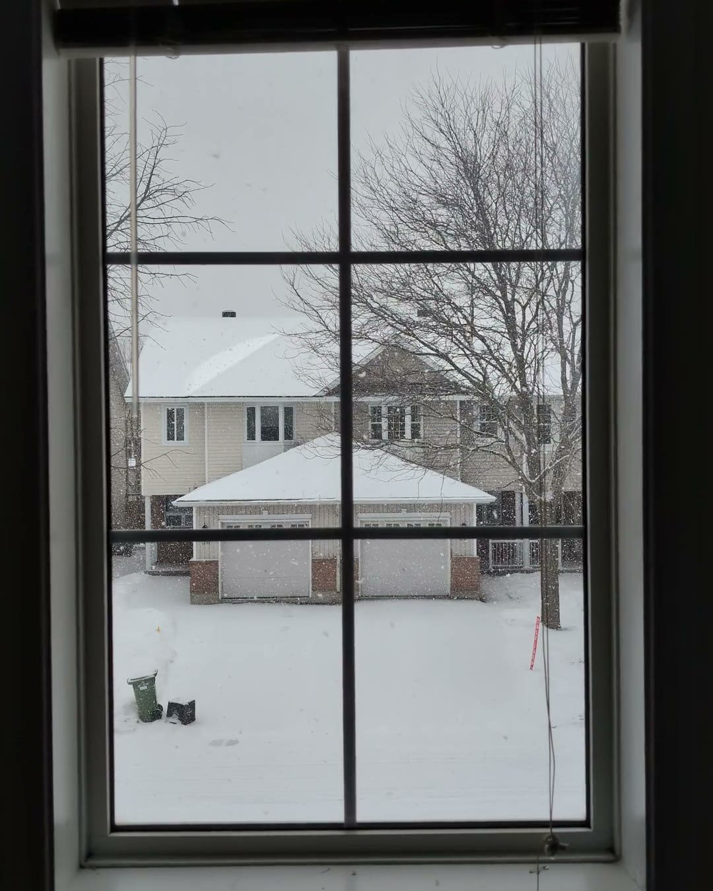
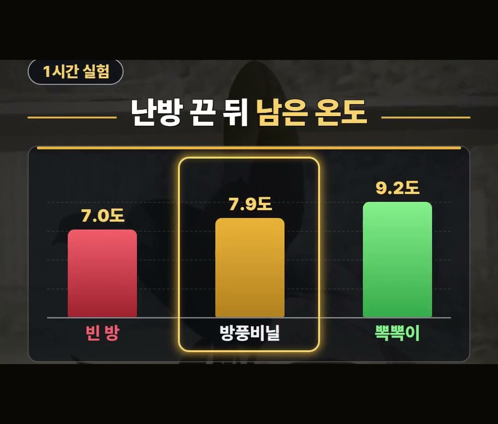
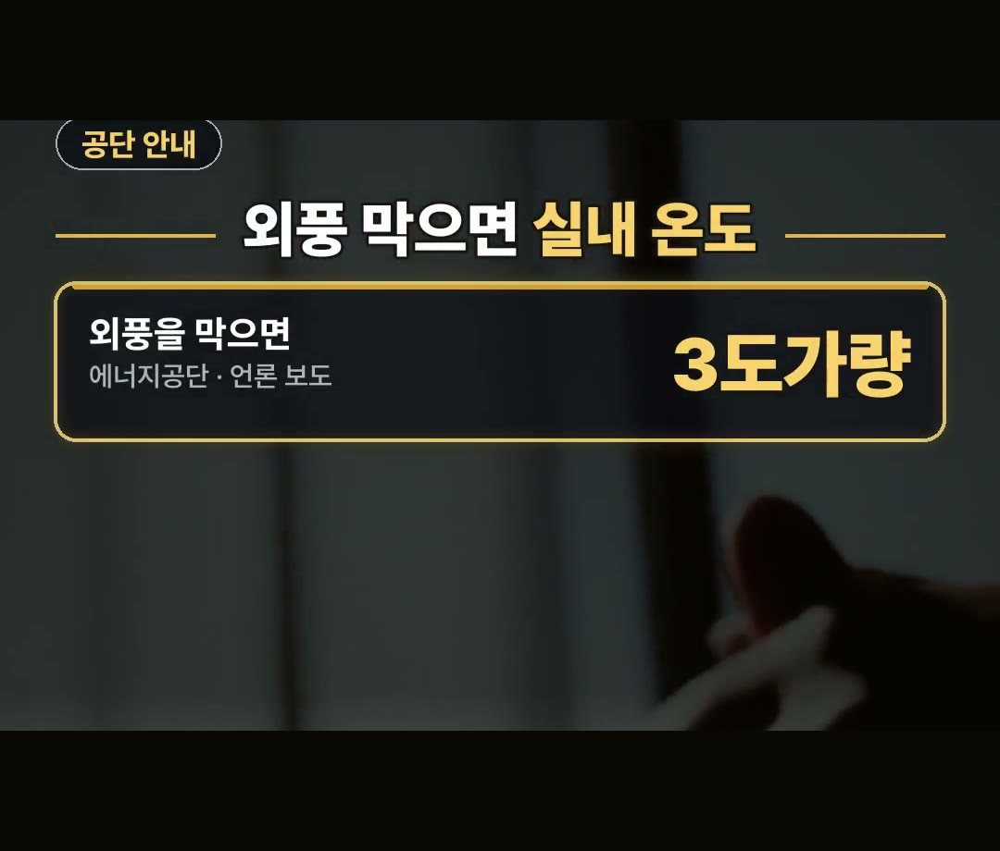
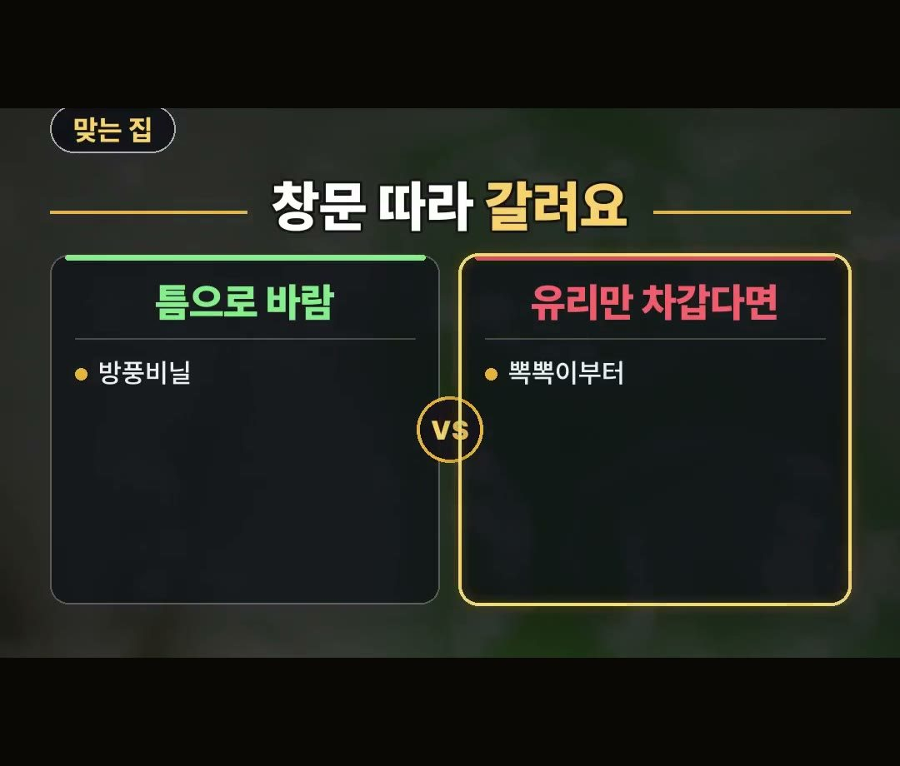

방풍비닐 효과, 실험 온도가 뽁뽁이와 갈린 이유와 맞는 창문
※ 이 글에는 제휴 링크가 포함되어 있으며, 링크를 통해 구매하시면 일정 수수료를 받을 수 있습니다. (가격은 같습니다)
※ 이 포스팅은 쿠팡 파트너스 활동의 일환으로, 이에 따른 일정액의 수수료를 제공받습니다.
※ 이 콘텐츠는 토스쇼핑 쉐어링크 활동의 일환으로, 링크를 통한 구매가 발생하면 일정 수수료를 지급받습니다.
결론부터 말하면, 방풍비닐은 창틀 틈으로 들어오는 바람을 막는 물건이라 우리 창문이 어떤 쪽인지부터 보는 게 먼저예요.
왜 그런지는 아래에서 실험 숫자와 함께 하나씩 풀어 볼게요.
2013년 시험연구원 실험에서 16도로 데운 방의 난방을 1시간 껐더니 방풍비닐 방은 7.9도, 뽁뽁이 방은 9.2도였어요.
그래서 방풍비닐 효과는 틈새 바람이 있는 창문에서 따져 보는 게 맞다고 정리해 봤어요! 🪟

비닐만 붙이면 창문 추위가 다 잡힐까요
겨울이 오면 창문에 비닐만 붙이면 추위가 다 잡힐 것 같다는 생각이 들기 쉬워요.
그런데 실험 숫자를 보면 조금 다릅니다.
방풍비닐과 뽁뽁이는 둘 다 창문에 쓰는 물건이지만, 맡는 일이 서로 달라요.
방풍비닐 효과를 제대로 보려면 이 차이부터 알고 시작하는 게 좋습니다.
창문이 춥게 느껴지는 데는 틈으로 들어오는 바람 때문일 수도 있고, 유리 자체가 차가워서일 수도 있어요.
어느 쪽이냐에 따라 먼저 손볼 물건이 달라진다는 게 이 글의 핵심이에요.

1시간 실험, 남은 온도는 이렇게 달랐어요
2013년 시험연구원 실험에서는 같은 조건의 방을 16도로 데운 뒤 난방을 1시간 껐습니다.
1시간 뒤 방마다 남은 온도는 이랬어요.
- 아무것도 없는 빈 방: 7.0도
- 방풍비닐 방: 7.9도
- 뽁뽁이 방: 9.2도
빈 방보다는 방풍비닐 방이 높았고, 이 실험에서는 뽁뽁이 방이 더 높게 나왔어요.
다만 이 숫자는 2013년 한 번의 실험 조건에서 나온 결과라, 모든 집과 모든 창문으로 넓혀 말할 수는 없어요.
그래도 「비닐이면 다 같다」 는 생각과는 다른 결과라는 점에서, 사기 전에 한 번쯤 알아 두면 좋은 숫자예요.
방풍비닐이 아무 효과가 없다는 뜻이 아니라, 빈 방보다는 온도가 덜 떨어졌다는 점도 같이 봐 주세요.

방풍비닐 효과는 틈새 바람에서 나와요
방풍비닐은 창틀까지 감싸서 틈새로 들어오는 바람을 막는 물건이에요.
에너지공단은 외풍을 막으면 실내 온도가 3도가량 오른다고 안내했다고 합니다.
그러니 방풍비닐 효과는 창틀 틈으로 찬 바람이 드는 창문에서 따져 보는 게 맞아요.
바람이 들지 않는 창문이라면 같은 비닐이라도 기대하는 만큼의 차이를 느끼기 어려울 수 있어요.

우리 창문이 어떤 쪽인지 먼저 보세요
창문은 집 열 손실의 32%를 차지한다고 해요.
그래서 창문을 손볼 때는 무엇을 붙일지보다 우리 창문이 어떤 상태인지를 먼저 보는 게 좋습니다.
고를 때 볼 점을 우리 말로 정리하면 이렇습니다.
- 창틀 틈으로 바람이 드는지
- 바람은 없는데 유리만 차가운지
틈으로 바람이 들면 방풍비닐이 맞고, 바람 없이 유리만 차갑다면 뽁뽁이부터 보는 쪽이 맞아요.
한 집 안에서도 창문마다 상태가 다를 수 있으니, 방마다 창문을 하나씩 살펴보고 정하는 것도 방법이에요.
그리고 창문을 막은 뒤에도 환기는 짧게 자주 해 주세요.
창문을 꼭 막아 둘수록 집 안 공기를 바꿔 주는 시간도 챙기는 게 좋아요.

이런 제품도 있어요
상품 설명에 따르면 대형 투명 방풍비닐로, 크기는 150 곱하기 200센티미터라고 합니다.
창문 크기는 집마다 다르니, 붙일 창문의 크기와 견주어 보고 고르시면 좋아요.
정리
- 2013년 시험연구원 실험(16도 방, 난방 1시간 끔)에서 빈 방 7.0도, 방풍비닐 7.9도, 뽁뽁이 9.2도였어요.
- 방풍비닐은 창틀까지 감싸 틈새 바람을 막는 물건이고, 에너지공단은 외풍을 막으면 실내가 3도가량 오른다고 안내했어요.
- 틈으로 바람이 들면 방풍비닐, 유리만 차갑다면 뽁뽁이부터 보고, 환기는 짧게 자주 해 주세요.
링크는 아래에 모아 두었어요.
📌 2026년 10월 기준 정보예요. 가격은 시기에 따라 달라질 수 있어요.
사진·영상: Pexels (Büşra İnce, Luk Sauvage, MART PRODUCTION, Mary Solyanik, Parth Madhvani, Polina Popgeorgieva)